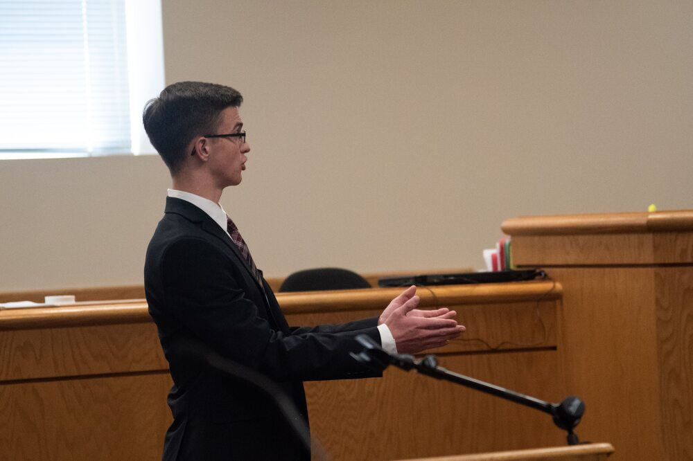
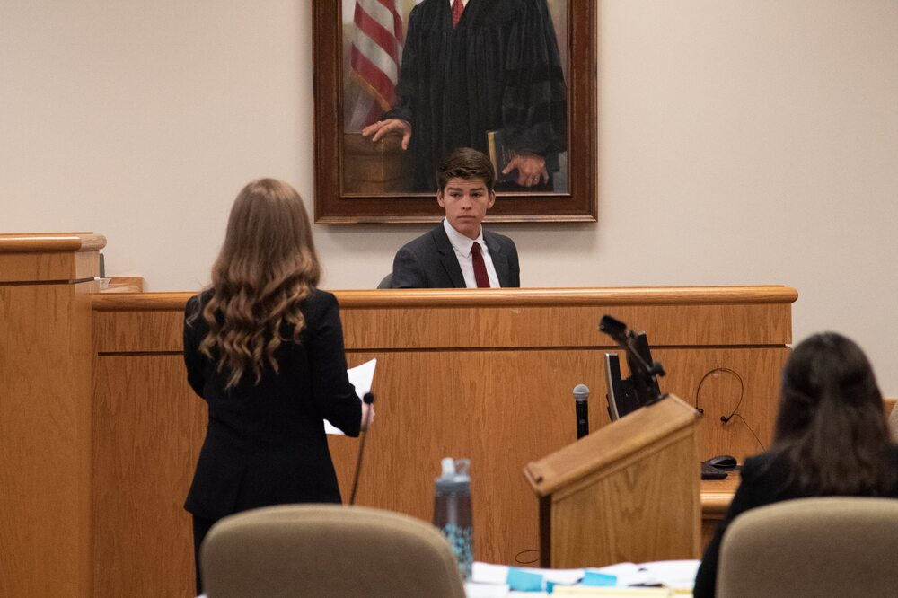

Training for Mock Trial Judges
We have found it most effective to provide online training videos so that judges can watch them at their own convenience. We do ask that you watch these videos prior to arriving to judge so that if you do have any questions that are not addressed in the videos that you have time to ask them before the trials start. We have a refined process for scoring and submitting the ballots electronically. This streamlined process has received rave reviews from both judges and coaches. Below you will see a video that explain how to fill out and submit a ballot. There is also a video that instructs you on what to look for when you are judging a trial. This video includes Mock Trial rules and procedures that you need to be aware of.